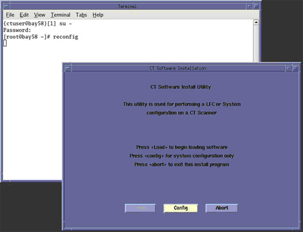

Illustration 1: CT Software Install Utility Window

| NOTE: | The following shows the screens that are used to change the configuration of the system. These screens are the same as those used for the Software Configuration during Load From Cold. The actual screens will vary depending on the current configuration of your system. |